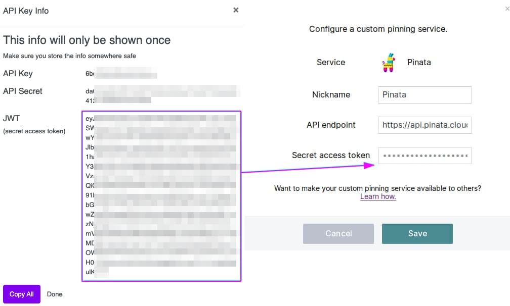

api = IPFSApi()Changed to local nodeIPFSApi (gateway_type='local', timeout=10, **kwargs)
Initialize self. See help(type(self)) for accurate signature.
| Type | Default | Details | |
|---|---|---|---|
| gateway_type | str | local | Gateway to use - public, infura, local |
| timeout | int | 10 | |
| kwargs |
By default, the IPFSApi uses the local node.
To change to infura or public use the change_gateway_type method
local and infura nodesIPFSApi.add_items (filepath:Union[str,List[str]], directory:bool=False, wrap_with_directory:bool=False, chunker:str='size-262144', pin:bool=True, hash_:str='sha2-256', progress:str='true', silent:str='false', cid_version:int=0, **kwargs)
add file/directory to ipfs
| Type | Default | Details | |
|---|---|---|---|
| filepath | typing.Union[str, typing.List[str]] | Path to the file/directory to be added to IPFS | |
| directory | bool | False | Is filepath a directory |
| wrap_with_directory | bool | False | True if path is a directory |
| chunker | str | size-262144 | Chunking algorithm, size-[bytes], rabin-[min]-[avg]-[max] or buzhash |
| pin | bool | True | Pin this object when adding |
| hash_ | str | sha2-256 | Hash function to use. Implies CIDv1 if not sha2-256 |
| progress | str | true | Stream progress data |
| silent | str | false | Write no output |
| cid_version | int | 0 | CID version |
| kwargs |
Important: This requires a local IPFS Node to be run. Set up your local node using info here.
Note: Full list of available
paramsonaddfunction can be found here
Upload a file
[{'Name': 'README.md', 'Bytes': 1179},
{'Name': 'README.md',
'Hash': 'QmUfwG4P6EA5xbD3De5bS7XKcBion8ReQj7m9ZjxaPvq3B',
'Size': '1190'}]Upload multiple files
[{'Name': 'README.md', 'Bytes': 1179},
{'Name': 'README.md',
'Hash': 'QmUfwG4P6EA5xbD3De5bS7XKcBion8ReQj7m9ZjxaPvq3B',
'Size': '1190'},
{'Name': 'test.txt', 'Bytes': 24},
{'Name': 'test.txt',
'Hash': 'QmTT8vwdbnP9Ls8bSY1LMyW4a8bEwTYZa5izEoJMBtTPfb',
'Size': '32'}]You can view the added file on ipfs.io
To view any CID on ipfs.io https://ipfs.io/ipfs/CID
Upload multiple file wrapped in a directory
response, jsonobject = api.add_items(filepath=["../README.md", 'output/test.txt'], wrap_with_directory='true'); jsonobject[{'Name': 'README.md', 'Bytes': 1179},
{'Name': 'README.md',
'Hash': 'QmUfwG4P6EA5xbD3De5bS7XKcBion8ReQj7m9ZjxaPvq3B',
'Size': '1190'},
{'Name': 'test.txt', 'Bytes': 24},
{'Name': 'test.txt',
'Hash': 'QmTT8vwdbnP9Ls8bSY1LMyW4a8bEwTYZa5izEoJMBtTPfb',
'Size': '32'},
{'Name': '',
'Hash': 'Qmbu99JbYDXGCf9bprV355A5hLLE6ogHe5FM4BVAZmqU9i',
'Size': '1328'}]Upload a directory
[{'Name': 'output/fol1/fol2/test3.txt',
'Hash': 'Qmb6W6nVPYd5CJKFpC1zGGuoD7TYQLE5PGG1RHkHm2W3m9',
'Size': '40'},
{'Name': 'output/fol1/fol2',
'Hash': 'QmRGeFLyf3ZANQFVdVvo8RzSrBcs7BGGqN6wn764xmwopA',
'Size': '3975794'},
{'Name': 'output/fol1',
'Hash': 'QmdK9agin1q8YdTaUQ6v81pWBu8TencfijyPGVZ5epFxvR',
'Size': '7951637'},
{'Name': 'output',
'Hash': 'QmWJvSt7QGY2yhr9mrfAm76vRvxXA5ygB4zd2SmfD43vtX',
'Size': '11927480'}]This works without a local IPFS node running
[{'Name': 'README.md', 'Bytes': 1179},
{'Name': 'README.md',
'Hash': 'QmUfwG4P6EA5xbD3De5bS7XKcBion8ReQj7m9ZjxaPvq3B',
'Size': '1190'}][{'Name': 'output/fol1/fol2/test3.txt',
'Hash': 'Qmb6W6nVPYd5CJKFpC1zGGuoD7TYQLE5PGG1RHkHm2W3m9',
'Size': '40'},
{'Name': 'output/fol1/fol2',
'Hash': 'QmRGeFLyf3ZANQFVdVvo8RzSrBcs7BGGqN6wn764xmwopA',
'Size': '3975794'},
{'Name': 'output/fol1',
'Hash': 'QmdK9agin1q8YdTaUQ6v81pWBu8TencfijyPGVZ5epFxvR',
'Size': '7951637'},
{'Name': 'output',
'Hash': 'QmWJvSt7QGY2yhr9mrfAm76vRvxXA5ygB4zd2SmfD43vtX',
'Size': '11927480'}]You can view the added file on infura.io
To view any CID on infura https://ipfs.infura.io/ipfs/CID
local and public nodes. ls not implemented on infuraIPFSApi.ls_items (cid:str, resolve_type:bool=True, size:bool=True, **kwargs)
List directory contents for Unix filesystem objects
| Type | Default | Details | |
|---|---|---|---|
| cid | str | The path to the IPFS object(s) to list links from | |
| resolve_type | bool | True | Resolve linked objects to find out their types |
| size | bool | True | Resolve linked objects to find out their file size |
| kwargs |
[{'Objects': [{'Hash': 'QmeyTiqrD6oo4eQXbAt7hZn3ASzpcP3Kvb1rc9qznEowEw',
'Links': [{'Name': 'adult_data.csv',
'Hash': 'QmZnxARhJWsCbTxiAzoRhnxHgMtoEkNJNS8DGLCBEMvm4V',
'Size': 3974475,
'Type': 2,
'Target': ''},
{'Name': 'fol1',
'Hash': 'QmUNLLsPACCz1vLxQVkXqqLX5R1X345qqfHbsf67hvA3Nn',
'Size': 0,
'Type': 1,
'Target': ''},
{'Name': 'test.txt',
'Hash': 'QmTT8vwdbnP9Ls8bSY1LMyW4a8bEwTYZa5izEoJMBtTPfb',
'Size': 24,
'Type': 2,
'Target': ''},
{'Name': 'test2.txt',
'Hash': 'QmWa7aPQWCkLAmV2pt1Wjj3uE7V3CG3KYMKBKsVAvWG649',
'Size': 23,
'Type': 2,
'Target': ''},
{'Name': 'test3.txt',
'Hash': 'Qmb6W6nVPYd5CJKFpC1zGGuoD7TYQLE5PGG1RHkHm2W3m9',
'Size': 32,
'Type': 2,
'Target': ''}]}]}][{'Objects': [{'Hash': 'QmeyTiqrD6oo4eQXbAt7hZn3ASzpcP3Kvb1rc9qznEowEw',
'Links': [{'Name': 'adult_data.csv',
'Hash': 'QmZnxARhJWsCbTxiAzoRhnxHgMtoEkNJNS8DGLCBEMvm4V',
'Size': 3974475,
'Type': 2,
'Target': ''},
{'Name': 'fol1',
'Hash': 'QmUNLLsPACCz1vLxQVkXqqLX5R1X345qqfHbsf67hvA3Nn',
'Size': 0,
'Type': 1,
'Target': ''},
{'Name': 'test.txt',
'Hash': 'QmTT8vwdbnP9Ls8bSY1LMyW4a8bEwTYZa5izEoJMBtTPfb',
'Size': 24,
'Type': 2,
'Target': ''},
{'Name': 'test2.txt',
'Hash': 'QmWa7aPQWCkLAmV2pt1Wjj3uE7V3CG3KYMKBKsVAvWG649',
'Size': 23,
'Type': 2,
'Target': ''},
{'Name': 'test3.txt',
'Hash': 'Qmb6W6nVPYd5CJKFpC1zGGuoD7TYQLE5PGG1RHkHm2W3m9',
'Size': 32,
'Type': 2,
'Target': ''}]}]}]IPFSApi.cat_items (cid:str, **kwargs)
Show IPFS object data
| Type | Details | |
|---|---|---|
| cid | str | The path to the IPFS object(s) to be output |
| kwargs |
When given a file CID
'# Welcome to Immerse by Algovera\r\n> A python library by Algovera to interact with IPFS and IPFS ecosystem such as the common pinning services\r\n\r\n\r\n## What is Immerse?\r\n\r\nImmerse is a python library by Algovera to interact with IPFS and IPFS ecosystem such as the common pinning services. It is designed by data scientists for data scientists to interact with the IPFS ecosystem without leaving the comfort of python and jupyter notebook.\r\n\r\nYou can learn more about IPFS [here](https://ipfs.io/#why)\r\n\r\nIPFS is built using the go-lang and javascript. With Immerse, you can interact with IPFS using the exposed [HTTP RPC API](https://docs.ipfs.io/reference/http/api/#getting-started). \r\n\r\nYou will need a local IPFS Node running to use the HTTP API (even when using Immerse). As an alternative, you can connect via the [Infura](https://infura.io/product/ipfs)\'s dedicated IPFS gateway. Immerse provide both ways to interact with IPFS.\r\n\r\n## Installing\r\n\r\nto do: instructions on how to install library goes here\r\n\r\n## How to use\r\n\r\nTo adda file to IPFS, simply\r\n\r\n```python\r\nfrom immerse import httpapi\r\n\r\nurl = get_coreurl()\r\nresponse, json = add_items(url, "path/to/file")\r\n```\r\n'When given a directory CID (this will throw an error)
HTTPError: Response Status Code: 500; Error Message: this dag node is a directory'# Welcome to Immerse by Algovera\r\n> A python library by Algovera to interact with IPFS and IPFS ecosystem such as the common pinning services\r\n\r\n\r\n## What is Immerse?\r\n\r\nImmerse is a python library by Algovera to interact with IPFS and IPFS ecosystem such as the common pinning services. It is designed by data scientists for data scientists to interact with the IPFS ecosystem without leaving the comfort of python and jupyter notebook.\r\n\r\nYou can learn more about IPFS [here](https://ipfs.io/#why)\r\n\r\nIPFS is built using the go-lang and javascript. With Immerse, you can interact with IPFS using the exposed [HTTP RPC API](https://docs.ipfs.io/reference/http/api/#getting-started). \r\n\r\nYou will need a local IPFS Node running to use the HTTP API (even when using Immerse). As an alternative, you can connect via the [Infura](https://infura.io/product/ipfs)\'s dedicated IPFS gateway. Immerse provide both ways to interact with IPFS.\r\n\r\n## Installing\r\n\r\nto do: instructions on how to install library goes here\r\n\r\n## How to use\r\n\r\nTo adda file to IPFS, simply\r\n\r\n```python\r\nfrom immerse import httpapi\r\n\r\nurl = get_coreurl()\r\nresponse, json = add_items(url, "path/to/file")\r\n```\r\n''# Welcome to Immerse by Algovera\r\n> A python library by Algovera to interact with IPFS and IPFS ecosystem such as the common pinning services\r\n\r\n\r\n## What is Immerse?\r\n\r\nImmerse is a python library by Algovera to interact with IPFS and IPFS ecosystem such as the common pinning services. It is designed by data scientists for data scientists to interact with the IPFS ecosystem without leaving the comfort of python and jupyter notebook.\r\n\r\nYou can learn more about IPFS [here](https://ipfs.io/#why)\r\n\r\nIPFS is built using the go-lang and javascript. With Immerse, you can interact with IPFS using the exposed [HTTP RPC API](https://docs.ipfs.io/reference/http/api/#getting-started). \r\n\r\nYou will need a local IPFS Node running to use the HTTP API (even when using Immerse). As an alternative, you can connect via the [Infura](https://infura.io/product/ipfs)\'s dedicated IPFS gateway. Immerse provide both ways to interact with IPFS.\r\n\r\n## Installing\r\n\r\nto do: instructions on how to install library goes here\r\n\r\n## How to use\r\n\r\nTo adda file to IPFS, simply\r\n\r\n```python\r\nfrom immerse import httpapi\r\n\r\nurl = get_coreurl()\r\nresponse, json = add_items(url, "path/to/file")\r\n```\r\n''QmUfwG4P6EA5xbD3De5bS7XKcBion8ReQj7m9ZjxaPvq3B\x00\x00\x00\x00\x00\x00\x00\x00\x00\x00\x00\x00\x00\x00\x00\x00\x00\x00\x00\x00\x00\x00\x00\x00\x00\x00\x00\x00\x00\x00\x00\x00\x00\x00\x00\x00\x00\x00\x00\x00\x00\x00\x00\x00\x00\x00\x00\x00\x00\x00\x00\x00\x00\x000000644\x000000000\x000000000\x0000000002233\x0014265706026\x00016723\x00 0\x00\x00\x00\x00\x00\x00\x00\x00\x00\x00\x00\x00\x00\x00\x00\x00\x00\x00\x00\x00\x00\x00\x00\x00\x00\x00\x00\x00\x00\x00\x00\x00\x00\x00\x00\x00\x00\x00\x00\x00\x00\x00\x00\x00\x00\x00\x00\x00\x00\x00\x00\x00\x00\x00\x00\x00\x00\x00\x00\x00\x00\x00\x00\x00\x00\x00\x00\x00\x00\x00\x00\x00\x00\x00\x00\x00\x00\x00\x00\x00\x00\x00\x00\x00\x00\x00\x00\x00\x00\x00\x00\x00\x00\x00\x00\x00\x00\x00\x00\x00ustar\x0000\x00\x00\x00\x00\x00\x00\x00\x00\x00\x00\x00\x00\x00\x00\x00\x00\x00\x00\x00\x00\x00\x00\x00\x00\x00\x00\x00\x00\x00\x00\x00\x00\x00\x00\x00\x00\x00\x00\x00\x00\x00\x00\x00\x00\x00\x00\x00\x00\x00\x00\x00\x00\x00\x00\x00\x00\x00\x00\x00\x00\x00\x00\x00\x000000000\x000000000\x00\x00\x00\x00\x00\x00\x00\x00\x00\x00\x00\x00\x00\x00\x00\x00\x00\x00\x00\x00\x00\x00\x00\x00\x00\x00\x00\x00\x00\x00\x00\x00\x00\x00\x00\x00\x00\x00\x00\x00\x00\x00\x00\x00\x00\x00\x00\x00\x00\x00\x00\x00\x00\x00\x00\x00\x00\x00\x00\x00\x00\x00\x00\x00\x00\x00\x00\x00\x00\x00\x00\x00\x00\x00\x00\x00\x00\x00\x00\x00\x00\x00\x00\x00\x00\x00\x00\x00\x00\x00\x00\x00\x00\x00\x00\x00\x00\x00\x00\x00\x00\x00\x00\x00\x00\x00\x00\x00\x00\x00\x00\x00\x00\x00\x00\x00\x00\x00\x00\x00\x00\x00\x00\x00\x00\x00\x00\x00\x00\x00\x00\x00\x00\x00\x00\x00\x00\x00\x00\x00\x00\x00\x00\x00\x00\x00\x00\x00\x00\x00\x00\x00\x00\x00\x00\x00\x00\x00\x00\x00\x00\x00\x00\x00\x00\x00\x00\x00# Welcome to Immerse by Algovera\r\n> A python library by Algovera to interact with IPFS and IPFS ecosystem such as the common pinning services\r\n\r\n\r\n## What is Immerse?\r\n\r\nImmerse is a python library by Algovera to interact with IPFS and IPFS ecosystem such as the common pinning services. It is designed by data scientists for data scientists to interact with the IPFS ecosystem without leaving the comfort of python and jupyter notebook.\r\n\r\nYou can learn more about IPFS [here](https://ipfs.io/#why)\r\n\r\nIPFS is built using the go-lang and javascript. With Immerse, you can interact with IPFS using the exposed [HTTP RPC API](https://docs.ipfs.io/reference/http/api/#getting-started). \r\n\r\nYou will need a local IPFS Node running to use the HTTP API (even when using Immerse). As an alternative, you can connect via the [Infura](https://infura.io/product/ipfs)\'s dedicated IPFS gateway. Immerse provide both ways to interact with IPFS.\r\n\r\n## Installing\r\n\r\nto do: instructions on how to install library goes here\r\n\r\n## How to use\r\n\r\nTo adda file to IPFS, simply\r\n\r\n```python\r\nfrom immerse import httpapi\r\n\r\nurl = get_coreurl()\r\nresponse, json = add_items(url, "path/to/file")\r\n```\r\n\x00\x00\x00\x00\x00\x00\x00\x00\x00\x00\x00\x00\x00\x00\x00\x00\x00\x00\x00\x00\x00\x00\x00\x00\x00\x00\x00\x00\x00\x00\x00\x00\x00\x00\x00\x00\x00\x00\x00\x00\x00\x00\x00\x00\x00\x00\x00\x00\x00\x00\x00\x00\x00\x00\x00\x00\x00\x00\x00\x00\x00\x00\x00\x00\x00\x00\x00\x00\x00\x00\x00\x00\x00\x00\x00\x00\x00\x00\x00\x00\x00\x00\x00\x00\x00\x00\x00\x00\x00\x00\x00\x00\x00\x00\x00\x00\x00\x00\x00\x00\x00\x00\x00\x00\x00\x00\x00\x00\x00\x00\x00\x00\x00\x00\x00\x00\x00\x00\x00\x00\x00\x00\x00\x00\x00\x00\x00\x00\x00\x00\x00\x00\x00\x00\x00\x00\x00\x00\x00\x00\x00\x00\x00\x00\x00\x00\x00\x00\x00\x00\x00\x00\x00\x00\x00\x00\x00\x00\x00\x00\x00\x00\x00\x00\x00\x00\x00\x00\x00\x00\x00\x00\x00\x00\x00\x00\x00\x00\x00\x00\x00\x00\x00\x00\x00\x00\x00\x00\x00\x00\x00\x00\x00\x00\x00\x00\x00\x00\x00\x00\x00\x00\x00\x00\x00\x00\x00\x00\x00\x00\x00\x00\x00\x00\x00\x00\x00\x00\x00\x00\x00\x00\x00\x00\x00\x00\x00\x00\x00\x00\x00\x00\x00\x00\x00\x00\x00\x00\x00\x00\x00\x00\x00\x00\x00\x00\x00\x00\x00\x00\x00\x00\x00\x00\x00\x00\x00\x00\x00\x00\x00\x00\x00\x00\x00\x00\x00\x00\x00\x00\x00\x00\x00\x00\x00\x00\x00\x00\x00\x00\x00\x00\x00\x00\x00\x00\x00\x00\x00\x00\x00\x00\x00\x00\x00\x00\x00\x00\x00\x00\x00\x00\x00\x00\x00\x00\x00\x00\x00\x00\x00\x00\x00\x00\x00\x00\x00\x00\x00\x00\x00\x00\x00\x00\x00\x00\x00\x00\x00\x00\x00\x00\x00\x00\x00\x00\x00\x00\x00\x00\x00\x00\x00\x00\x00\x00\x00\x00\x00\x00\x00\x00\x00\x00\x00\x00\x00\x00\x00\x00\x00\x00\x00\x00\x00\x00\x00\x00\x00\x00\x00\x00\x00\x00\x00\x00\x00\x00\x00\x00\x00\x00\x00\x00\x00\x00\x00\x00\x00\x00\x00\x00\x00\x00\x00\x00\x00\x00\x00\x00\x00\x00\x00\x00\x00\x00\x00\x00\x00\x00\x00\x00\x00\x00\x00\x00\x00\x00\x00\x00\x00\x00\x00\x00\x00\x00\x00\x00\x00\x00\x00\x00\x00\x00\x00\x00\x00\x00\x00\x00\x00\x00\x00\x00\x00\x00\x00\x00\x00\x00\x00\x00\x00\x00\x00\x00\x00\x00\x00\x00\x00\x00\x00\x00\x00\x00\x00\x00\x00\x00\x00\x00\x00\x00\x00\x00\x00\x00\x00\x00\x00\x00\x00\x00\x00\x00\x00\x00\x00\x00\x00\x00\x00\x00\x00\x00\x00\x00\x00\x00\x00\x00\x00\x00\x00\x00\x00\x00\x00\x00\x00\x00\x00\x00\x00\x00\x00\x00\x00\x00\x00\x00\x00\x00\x00\x00\x00\x00\x00\x00\x00\x00\x00\x00\x00\x00\x00\x00\x00\x00\x00\x00\x00\x00\x00\x00\x00\x00\x00\x00\x00\x00\x00\x00\x00\x00\x00\x00\x00\x00\x00\x00\x00\x00\x00\x00\x00\x00\x00\x00\x00\x00\x00\x00\x00\x00\x00\x00\x00\x00\x00\x00\x00\x00\x00\x00\x00\x00\x00\x00\x00\x00\x00\x00\x00\x00\x00\x00\x00\x00\x00\x00\x00\x00\x00\x00\x00\x00\x00\x00\x00\x00\x00\x00\x00\x00\x00\x00\x00\x00\x00\x00\x00\x00\x00\x00\x00\x00\x00\x00\x00\x00\x00\x00\x00\x00\x00\x00\x00\x00\x00\x00\x00\x00\x00\x00\x00\x00\x00\x00\x00\x00\x00\x00\x00\x00\x00\x00\x00\x00\x00\x00\x00\x00\x00\x00\x00\x00\x00\x00\x00\x00\x00\x00\x00\x00\x00\x00\x00\x00\x00\x00\x00\x00\x00\x00\x00\x00\x00\x00\x00\x00\x00\x00\x00\x00\x00\x00\x00\x00\x00\x00\x00\x00\x00\x00\x00\x00\x00\x00\x00\x00\x00\x00\x00\x00\x00\x00\x00\x00\x00\x00\x00\x00\x00\x00\x00\x00\x00\x00\x00\x00\x00\x00\x00\x00\x00\x00\x00\x00\x00\x00\x00\x00\x00\x00\x00\x00\x00\x00\x00\x00\x00\x00\x00\x00\x00\x00\x00\x00\x00\x00\x00\x00\x00\x00\x00\x00\x00\x00\x00\x00\x00\x00\x00\x00\x00\x00\x00\x00\x00\x00\x00\x00\x00\x00\x00\x00\x00\x00\x00\x00\x00\x00\x00\x00\x00\x00\x00\x00\x00\x00\x00\x00\x00\x00\x00\x00\x00\x00\x00\x00\x00\x00\x00\x00\x00\x00\x00\x00\x00\x00\x00\x00\x00\x00\x00\x00\x00\x00\x00\x00\x00\x00\x00\x00\x00\x00\x00\x00\x00\x00\x00\x00\x00\x00\x00\x00\x00\x00\x00\x00\x00\x00\x00\x00\x00\x00\x00\x00\x00\x00\x00\x00\x00\x00\x00\x00\x00\x00\x00\x00\x00\x00\x00\x00\x00\x00\x00\x00\x00\x00\x00\x00\x00\x00\x00\x00\x00\x00\x00\x00\x00\x00\x00\x00\x00\x00\x00\x00\x00\x00\x00\x00\x00\x00\x00\x00\x00\x00\x00\x00\x00\x00\x00\x00\x00\x00\x00\x00\x00\x00\x00\x00\x00\x00\x00\x00\x00\x00\x00\x00\x00\x00\x00\x00\x00\x00\x00\x00\x00\x00\x00\x00\x00\x00\x00\x00\x00\x00\x00\x00\x00\x00\x00\x00\x00\x00\x00\x00\x00\x00\x00\x00\x00\x00\x00\x00\x00\x00\x00\x00\x00\x00\x00\x00\x00\x00\x00\x00\x00\x00\x00\x00\x00\x00\x00\x00\x00\x00\x00\x00\x00\x00\x00\x00\x00\x00\x00\x00\x00\x00\x00\x00\x00\x00\x00\x00\x00\x00\x00\x00\x00\x00\x00\x00\x00\x00\x00\x00\x00\x00\x00\x00\x00\x00\x00\x00\x00\x00\x00\x00\x00\x00\x00\x00\x00\x00\x00\x00\x00\x00\x00\x00\x00\x00\x00\x00\x00\x00\x00\x00\x00\x00\x00\x00\x00\x00\x00\x00\x00\x00\x00\x00\x00\x00\x00\x00\x00\x00\x00\x00\x00\x00\x00\x00\x00\x00\x00\x00\x00\x00\x00\x00\x00\x00\x00\x00\x00\x00\x00\x00\x00\x00\x00\x00\x00\x00\x00\x00\x00\x00\x00\x00\x00\x00\x00\x00\x00\x00\x00\x00\x00\x00\x00\x00\x00\x00\x00\x00\x00\x00\x00\x00\x00\x00\x00\x00\x00\x00\x00\x00\x00\x00\x00\x00\x00\x00\x00\x00\x00\x00\x00\x00\x00\x00\x00\x00\x00\x00\x00\x00\x00\x00\x00\x00\x00\x00\x00\x00\x00\x00\x00\x00\x00\x00\x00\x00\x00\x00\x00\x00\x00\x00\x00\x00\x00\x00\x00\x00\x00\x00\x00\x00\x00\x00\x00\x00\x00\x00\x00\x00\x00\x00\x00\x00\x00\x00\x00\x00\x00\x00\x00\x00\x00\x00\x00\x00\x00\x00\x00\x00\x00\x00\x00\x00\x00\x00\x00\x00\x00\x00\x00\x00\x00\x00\x00\x00\x00\x00\x00\x00\x00\x00\x00\x00\x00\x00\x00\x00\x00\x00\x00\x00\x00\x00\x00\x00\x00\x00\x00\x00\x00\x00\x00\x00\x00\x00\x00\x00\x00\x00\x00\x00\x00\x00\x00\x00\x00\x00\x00\x00\x00\x00\x00\x00\x00\x00\x00\x00\x00\x00\x00\x00\x00\x00\x00\x00\x00\x00\x00\x00\x00\x00\x00\x00\x00\x00\x00\x00\x00\x00\x00\x00\x00\x00\x00\x00\x00\x00\x00\x00\x00\x00\x00\x00\x00\x00\x00\x00\x00\x00\x00\x00\x00\x00\x00\x00\x00\x00\x00\x00\x00\x00\x00\x00\x00\x00\x00\x00\x00\x00\x00\x00\x00\x00\x00\x00\x00\x00\x00\x00\x00\x00\x00\x00\x00\x00\x00\x00\x00\x00\x00\x00\x00\x00\x00\x00\x00\x00\x00\x00\x00\x00\x00\x00\x00\x00\x00\x00\x00'DownloadDir (gateway_type:str, root_cid:str, output_fol:str)
Download a IPFS directory to your local disk
| Type | Details | |
|---|---|---|
| gateway_type | str | Gateway to use - works on local and public |
| root_cid | str | Root CID of the directory |
| output_fol | str | Path to save in your local disk |
Changed to local node{'output2': {'output2/adult_data.csv': {'Hash': 'QmZnxARhJWsCbTxiAzoRhnxHgMtoEkNJNS8DGLCBEMvm4V',
'type': 2},
'output2/fol1': {'output2/fol1': {'output2/fol1/adult_data.csv': {'Hash': 'QmZnxARhJWsCbTxiAzoRhnxHgMtoEkNJNS8DGLCBEMvm4V',
'type': 2},
'output2/fol1/fol2': {'output2/fol1/fol2': {'output2/fol1/fol2/adult_data.csv': {'Hash': 'QmZnxARhJWsCbTxiAzoRhnxHgMtoEkNJNS8DGLCBEMvm4V',
'type': 2},
'output2/fol1/fol2/test.txt': {'Hash': 'QmTT8vwdbnP9Ls8bSY1LMyW4a8bEwTYZa5izEoJMBtTPfb',
'type': 2},
'output2/fol1/fol2/test2.txt': {'Hash': 'QmWa7aPQWCkLAmV2pt1Wjj3uE7V3CG3KYMKBKsVAvWG649',
'type': 2},
'output2/fol1/fol2/test3.txt': {'Hash': 'Qmb6W6nVPYd5CJKFpC1zGGuoD7TYQLE5PGG1RHkHm2W3m9',
'type': 2}}},
'output2/fol1/test.txt': {'Hash': 'QmTT8vwdbnP9Ls8bSY1LMyW4a8bEwTYZa5izEoJMBtTPfb',
'type': 2},
'output2/fol1/test2.txt': {'Hash': 'QmWa7aPQWCkLAmV2pt1Wjj3uE7V3CG3KYMKBKsVAvWG649',
'type': 2},
'output2/fol1/test3.txt': {'Hash': 'Qmb6W6nVPYd5CJKFpC1zGGuoD7TYQLE5PGG1RHkHm2W3m9',
'type': 2}}},
'output2/test.txt': {'Hash': 'QmTT8vwdbnP9Ls8bSY1LMyW4a8bEwTYZa5izEoJMBtTPfb',
'type': 2},
'output2/test2.txt': {'Hash': 'QmWa7aPQWCkLAmV2pt1Wjj3uE7V3CG3KYMKBKsVAvWG649',
'type': 2},
'output2/test3.txt': {'Hash': 'Qmb6W6nVPYd5CJKFpC1zGGuoD7TYQLE5PGG1RHkHm2W3m9',
'type': 2}}}IPFSApi.dag_get (cid:str, output_codec:str='dag-json')
Get a DAG node from IPFS.
| Type | Default | Details | |
|---|---|---|---|
| cid | str | The path to the IPFS DAG node | |
| output_codec | str | dag-json |
IPFSApi.dag_export (cid:str, **kwargs)
Streams the selected DAG as a .car stream on stdout.
| Type | Details | |
|---|---|---|
| cid | str | The path to the IPFS DAG node |
| kwargs |
IPFSApi.dag_stat (cid:str, **kwargs)
Gets stats for a DAG.
| Type | Details | |
|---|---|---|
| cid | str | The path to the IPFS DAG node |
| kwargs |
Let’s take a look at the DAG structure of the folder we uploaded earlier
{'Data': {'/': {'bytes': 'CAE'}},
'Links': [{'Hash': {'/': 'QmZnxARhJWsCbTxiAzoRhnxHgMtoEkNJNS8DGLCBEMvm4V'},
'Name': 'adult_data.csv',
'Tsize': 3975476},
{'Hash': {'/': 'QmUNLLsPACCz1vLxQVkXqqLX5R1X345qqfHbsf67hvA3Nn'},
'Name': 'fol1',
'Tsize': 4},
{'Hash': {'/': 'QmTT8vwdbnP9Ls8bSY1LMyW4a8bEwTYZa5izEoJMBtTPfb'},
'Name': 'test.txt',
'Tsize': 32},
{'Hash': {'/': 'QmWa7aPQWCkLAmV2pt1Wjj3uE7V3CG3KYMKBKsVAvWG649'},
'Name': 'test2.txt',
'Tsize': 31},
{'Hash': {'/': 'Qmb6W6nVPYd5CJKFpC1zGGuoD7TYQLE5PGG1RHkHm2W3m9'},
'Name': 'test3.txt',
'Tsize': 40}]}dag_get method returns a dict with data and links. data is not exciting for a directory. Under the links, we can see files/directories that are in the uploaded directory.
Let’s see the number of files/directories in the links
Let’s take a look at the first link
More info on this can be found here
IPFSApi.pin_add (cid:str, recursive:str='true')
Pin objects to local storage.
| Type | Default | Details | |
|---|---|---|---|
| cid | str | Path to IPFS object(s) to be pinned | |
| recursive | str | true | Recursively pin the object linked to by the specified object(s) |
IPFSApi.pin_ls (type_:str='all', **kwargs)
List objects pinned to local storage.
| Type | Default | Details | |
|---|---|---|---|
| type_ | str | all | The type of pinned keys to list. Can be “direct”, “indirect”, “recursive”, or “all” |
| kwargs |
IPFSApi.pin_rm (cid:str, recursive:str='true', **kwargs)
List objects pinned to local storage.
| Type | Default | Details | |
|---|---|---|---|
| cid | str | Path to object(s) to be unpinned | |
| recursive | str | true | Recursively unpin the object linked to by the specified object(s) |
| kwargs |
[{'Pins': ['QmUfwG4P6EA5xbD3De5bS7XKcBion8ReQj7m9ZjxaPvq3B']}]Let’s list all the items pinned locally.
['QmNQw55u9tgykLVkb5W7nSWQuEK3ZbX8gx4fBpWDot3D27',
'QmNRupDY9nxDmCYecXMc656bbuM3ajZGXW4tL8nzgXccjM',
'QmNccC85TwgHqCu7rrbQuAiUqxoiFFQh2rFXz2d3cuXwG1',
'QmNyDNFfiF8y8xGNuNh6bL63FzAj1m79Mo8v8Y9aR3WCyx',
'QmNya3hiMsz5M3VBZ1UPDB1vDw57w3BKZhQRdAvA7znBx9',
'QmNyb437zLGoaj4rfbn8yUccTH6c6hR7XeeYcVitwc2iuJ',
'QmP2ZvQKrjvmNBWRMboFYzTWKSA2RR2yecoEtkS9HkdqpX',
'QmP6611DeM6Y1DTbkm6U7KwndWq1hnzA7wuAMwLT8VPnnX',
'QmPCxQWmfe14hTp86YAxbiG49HiSFxRLd4htPzpK7ivnge',
'QmPJDYxahQaiSMuAWjiYusmBte2sy66qk584ukn3NnKiW7']The item we added above is also part of it.
What does the Type : recursive means? - Direct pins - Single block and no others in relation to it. - Recursive pins - Given block and all of its children. - Indirect pins - the result of a given block’s parent being pinned recursively.
IPFSApi.rspin_add (service_name:str, service_edpt:str, service_key:str)
Pin object to remote pinning service.
| Type | Details | |
|---|---|---|
| service_name | str | Name of the remote pinning service to use |
| service_edpt | str | Service endpoint |
| service_key | str | Service key |
IPFSApi.rspin_ls (**kwargs)
List remote pinning services.
IPFSApi.rspin_rm (service_name:str)
Remove remote pinning service.
| Type | Details | |
|---|---|---|
| service_name | str | Name of pinning service to remove |
More info on this can be found here and here
Adding your Pinata to your IPFS node 1. Create an account with Pinata 2. use rspin_add method to add the service
import os
os.environ["pinata_api_secret"] = 'eyJhbGciOiJIUzI1NiIsInR5cCI6IkpXVCJ9.eyJ1c2VySW5mb3JtYXRpb24iOnsiaWQiOiJhZDkxMTQ3Yy0yMmE5LTQ1MjgtODk2OS05ZTdjMjAwNzE2ZjAiLCJlbWFpbCI6Im1hcnNoYXRoQGdtYWlsLmNvbSIsImVtYWlsX3ZlcmlmaWVkIjp0cnVlLCJwaW5fcG9saWN5Ijp7InJlZ2lvbnMiOlt7ImlkIjoiRlJBMSIsImRlc2lyZWRSZXBsaWNhdGlvbkNvdW50IjoxfV0sInZlcnNpb24iOjF9LCJtZmFfZW5hYmxlZCI6ZmFsc2V9LCJhdXRoZW50aWNhdGlvblR5cGUiOiJzY29wZWRLZXkiLCJzY29wZWRLZXlLZXkiOiIxMjc4NDQ5OGY3YzI0ZjczNDBjMiIsInNjb3BlZEtleVNlY3JldCI6ImQyYmNlZjFlODVlZjgyOTcwNGE0ZTk4NGRmYjc3ZWE0MDhlY2NkODk1MjMxMzI2YjVlMmZlZDQxMTBhZmQyMGEiLCJpYXQiOjE2NTM5Njk0MDN9.Fa055BjXNmERyl_ZAA9NJscdt0HqbiX0ByY8pU5uLNY'Note: For
pinatatheservice_keyis also calledJWT

res, content = api.rspin_add('pinata', 'https://api.pinata.cloud/psa', os.environ['pinata_api_secret']);res.status_code200Let’s list the pinned services to see if we successfully added pinata
Pinata has been added
IPFSApi.rpin_add (cid:str, service:str, background:str='false', **kwargs)
Pin object to remote pinning service.
| Type | Default | Details | |
|---|---|---|---|
| cid | str | Path to IPFS object(s) to be pinned | |
| service | str | Name of the remote pinning service to use | |
| background | str | false | Add to the queue on the remote service and return immediately (does not wait for pinned status) |
| kwargs |
IPFSApi.rpin_ls (service:str, **kwargs)
List objects pinned to remote pinning service.
| Type | Details | |
|---|---|---|
| service | str | Name of the remote pinning service to use |
| kwargs |
IPFSApi.rpin_rm (service:str, **kwargs)
Remove pins from remote pinning service.
| Type | Details | |
|---|---|---|
| service | str | Name of the remote pinning service to use |
| kwargs |
Let’s add a new file to IPFS and pin it to pinata.
[{'Name': 'test.txt', 'Bytes': 24},
{'Name': 'test.txt',
'Hash': 'QmTT8vwdbnP9Ls8bSY1LMyW4a8bEwTYZa5izEoJMBtTPfb',
'Size': '32'}]response, content = api.rpin_add('QmTT8vwdbnP9Ls8bSY1LMyW4a8bEwTYZa5izEoJMBtTPfb', 'pinata'); response.status_codeHTTPError: Response Status Code: 500; Error Message: reason: "DUPLICATE_OBJECT", details: "Object already pinned to pinata. Please remove or replace existing pin object.": 400 Bad RequestAs can ber seen, we have successfully added the file to pinata
[{'Status': 'pinned',
'Cid': 'QmUfwG4P6EA5xbD3De5bS7XKcBion8ReQj7m9ZjxaPvq3B',
'Name': ''},
{'Status': 'pinned',
'Cid': 'QmUNLLsPACCz1vLxQVkXqqLX5R1X345qqfHbsf67hvA3Nn',
'Name': 'policy/12D3KooWPuYpxNLqniaG7pxknEfRLxxYFUXULKXi3bE5zbCFDdCZ/mfs'},
{'Status': 'pinned',
'Cid': 'Qmb6W6nVPYd5CJKFpC1zGGuoD7TYQLE5PGG1RHkHm2W3m9',
'Name': ''},
{'Status': 'pinned',
'Cid': 'QmeGotBL5dsmgryJLn2q3krUCjX6F8sBMBBEC6ayknHVYZ',
'Name': ''},
{'Status': 'pinned',
'Cid': 'QmTT8vwdbnP9Ls8bSY1LMyW4a8bEwTYZa5izEoJMBtTPfb',
'Name': ''}]IPFSApi.block_get (cid:str)
Get a raw IPFS block.
| Type | Details | |
|---|---|---|
| cid | str | The base58 multihash of an existing block to get |
IPFSApi.block_put (filepath:str, mhtype:str='sha2-256', mhlen:int=-1, pin:str=False, **kwargs)
Store input as an IPFS block.
| Type | Default | Details | |
|---|---|---|---|
| filepath | str | Path to file | |
| mhtype | str | sha2-256 | multihash hash function. |
| mhlen | int | -1 | Multihash hash length |
| pin | str | False | pin added blocks recursively |
| kwargs |
IPFSApi.block_rm (cid:str, force:str='false', quiet:str='false')
Remove IPFS block(s).
| Type | Default | Details | |
|---|---|---|---|
| cid | str | Bash58 encoded multihash of block(s) to remove | |
| force | str | false | Ignore nonexistent blocks. |
| quiet | str | false | Write minimal output. |
IPFSApi.block_stat (cid:str)
Print information of a raw IPFS block.
| Type | Details | |
|---|---|---|
| cid | str | Bash58 encoded multihash of block(s) to remove |
To explore the blocks modeule, let’s add a large file
[{'Name': 'adult_data.csv', 'Bytes': 262144},
{'Name': 'adult_data.csv', 'Bytes': 524288},
{'Name': 'adult_data.csv', 'Bytes': 786432},
{'Name': 'adult_data.csv', 'Bytes': 1048576},
{'Name': 'adult_data.csv', 'Bytes': 1310720},
{'Name': 'adult_data.csv', 'Bytes': 1572864},
{'Name': 'adult_data.csv', 'Bytes': 1835008},
{'Name': 'adult_data.csv', 'Bytes': 2097152},
{'Name': 'adult_data.csv', 'Bytes': 2359296},
{'Name': 'adult_data.csv', 'Bytes': 2621440},
{'Name': 'adult_data.csv', 'Bytes': 2883584},
{'Name': 'adult_data.csv', 'Bytes': 3145728},
{'Name': 'adult_data.csv', 'Bytes': 3407872},
{'Name': 'adult_data.csv', 'Bytes': 3670016},
{'Name': 'adult_data.csv', 'Bytes': 3932160},
{'Name': 'adult_data.csv', 'Bytes': 3974475},
{'Name': 'adult_data.csv',
'Hash': 'QmZnxARhJWsCbTxiAzoRhnxHgMtoEkNJNS8DGLCBEMvm4V',
'Size': '3975476'}]As you can see from below, adding it results in blocks and we are given the root CID
We can take a look at the CIDs of different block like below
[{'Objects': [{'Hash': 'QmZnxARhJWsCbTxiAzoRhnxHgMtoEkNJNS8DGLCBEMvm4V',
'Links': [{'Name': '',
'Hash': 'Qmc7fYo65HLt1bwN6GudwZfq5MrAGYQ2wwsQ9y1fh6zNz9',
'Size': 262144,
'Type': 2,
'Target': ''},
{'Name': '',
'Hash': 'QmY1DtAnTrDX3KPgHFMPk6Zapa53s1fCapXChLBN9sMSQ4',
'Size': 262144,
'Type': 2,
'Target': ''},
{'Name': '',
'Hash': 'QmY6TEEHe4WiJVAcY6Lo9shWfc8WVQHV6HtBE8HaEfYykV',
'Size': 262144,
'Type': 2,
'Target': ''},
{'Name': '',
'Hash': 'QmRw8SE71wXbRYr4pttxJAhHCcxsTLqdimkNEPUkmJoppe',
'Size': 262144,
'Type': 2,
'Target': ''},
{'Name': '',
'Hash': 'QmYCUnARWF3jesUjc23Ku2sdxstoNjkzgevPcG95skkzq3',
'Size': 262144,
'Type': 2,
'Target': ''},
{'Name': '',
'Hash': 'Qmdc41AcSjYZ9qazoFdeWY9zrEEQv5e3mp2wuTbbMBVgis',
'Size': 262144,
'Type': 2,
'Target': ''},
{'Name': '',
'Hash': 'QmUzwuZkN7HMHXa169vZAZDcMu9DGzPUDTCbgcJomboYDs',
'Size': 262144,
'Type': 2,
'Target': ''},
{'Name': '',
'Hash': 'QmYNW7vP16AA9DvoH1t2598KehqmefQTAnn2XBRDy4xbRZ',
'Size': 262144,
'Type': 2,
'Target': ''},
{'Name': '',
'Hash': 'QmWzwegNQkJg1UJjeyAJpeVK58yxAzexfgPVgwG2GjaXrc',
'Size': 262144,
'Type': 2,
'Target': ''},
{'Name': '',
'Hash': 'QmcKhLKvYXCK1aFzkNiF5tZ8YPNHuiESdqujcKm6N4A7TZ',
'Size': 262144,
'Type': 2,
'Target': ''},
{'Name': '',
'Hash': 'QmYFUbBW93ZXhRw9gLmwodEeG26oHeo13RiHLDEmSitepf',
'Size': 262144,
'Type': 2,
'Target': ''},
{'Name': '',
'Hash': 'QmNyb437zLGoaj4rfbn8yUccTH6c6hR7XeeYcVitwc2iuJ',
'Size': 262144,
'Type': 2,
'Target': ''},
{'Name': '',
'Hash': 'QmeEPW7tFvgbJhrUEQrgHRkGBWx3p6HhsCJLEZ3LEduW64',
'Size': 262144,
'Type': 2,
'Target': ''},
{'Name': '',
'Hash': 'QmZ6Pe8xKLQJFzE28w6G4Lh6afDW3W4Hc8oHEFmVm88ouY',
'Size': 262144,
'Type': 2,
'Target': ''},
{'Name': '',
'Hash': 'Qmf4n9eT4r8eFeT92RjKXwWvp8TcxChiuweG74x3wZmVDy',
'Size': 262144,
'Type': 2,
'Target': ''},
{'Name': '',
'Hash': 'QmPSkoihW58K3v6n4UbKwu6Ex861Mf9xDakXhAD8uLLhXs',
'Size': 42315,
'Type': 2,
'Target': ''}]}]}]Here, we can see the three blocks of the total 16 blocks.
[{'Name': '',
'Hash': 'Qmc7fYo65HLt1bwN6GudwZfq5MrAGYQ2wwsQ9y1fh6zNz9',
'Size': 262144,
'Type': 2,
'Target': ''},
{'Name': '',
'Hash': 'QmY1DtAnTrDX3KPgHFMPk6Zapa53s1fCapXChLBN9sMSQ4',
'Size': 262144,
'Type': 2,
'Target': ''},
{'Name': '',
'Hash': 'QmY6TEEHe4WiJVAcY6Lo9shWfc8WVQHV6HtBE8HaEfYykV',
'Size': 262144,
'Type': 2,
'Target': ''}]Let’s read whats in the first and second block
age, workclass, fnlwgt, education, education-num, marital-status, occupation, relationship, race, se262144nited-States, <=50K
28, Private, 201175, 11th, 7, Never-married, Machine-op-inspct, Not-in-family, B262144We can also read using the cat method under the blocks module in which case if block is an intermediate block it will only print the raw binary data.
'\n\x8a\x80\x10\x08\x02\x12\x80\x80\x10age, workclass, fnlwgt, education, education-num, marital-status, occupation, relationship, race, sex, capital-gain, capital-loss, hours-per-week, native-country, salary\n39, State-gov, 77516, Bachelors, 13, Never-married, Adm-clerical, Not-in-family, White, Male, 2174, 0, 40, United-States'IPFSApi.mfs_chcid (path:str='/', cid_version:int=0, **kwargs)
Change the CID version or hash function of the root node of a given path.
| Type | Default | Details | |
|---|---|---|---|
| path | str | / | Path to change |
| cid_version | int | 0 | Cid version to use |
| kwargs |
IPFSApi.mfs_cp (source_path:str, dest_path:str, **kwargs)
Add references to IPFS files and directories in MFS (or copy within MFS).
| Type | Details | |
|---|---|---|
| source_path | str | Source IPFS or MFS path to copy |
| dest_path | str | Destination within MFS |
| kwargs |
IPFSApi.mfs_flush (path:str='/')
Flush a given path’s data to disk
| Type | Default | Details | |
|---|---|---|---|
| path | str | / | Path to flush |
IPFSApi.mfs_ls (path:str='/', **kwargs)
List directories in the local mutable namespace.
| Type | Default | Details | |
|---|---|---|---|
| path | str | / | Path to show listing for |
| kwargs |
IPFSApi.mfs_mkdir (path:str, **kwargs)
Make directories.
| Type | Details | |
|---|---|---|
| path | str | Path to dir to make |
| kwargs |
IPFSApi.mfs_mv (source_path:str, dest_path:str)
Move files.
| Type | Details | |
|---|---|---|
| source_path | str | Source file to move |
| dest_path | str | Destination path for file to be moved to |
IPFSApi.mfs_read (path, **kwargs)
Read a file in a given MFS.
| Details | |
|---|---|
| path | Path to file to be read |
| kwargs |
IPFSApi.mfs_rm (path, **kwargs)
Read a file in a given MFS.
| Details | |
|---|---|
| path | File to remove |
| kwargs |
IPFSApi.mfs_stat (path, **kwargs)
Display file status.
| Details | |
|---|---|
| path | Path to node to stat |
| kwargs |
IPFSApi.mfs_write (path, filepath, create=True, **kwargs)
Display file status.
| Type | Default | Details | |
|---|---|---|---|
| path | Path to write to | ||
| filepath | File to add | ||
| create | bool | True | Create the file if it does not exist |
| kwargs |
Making a directory